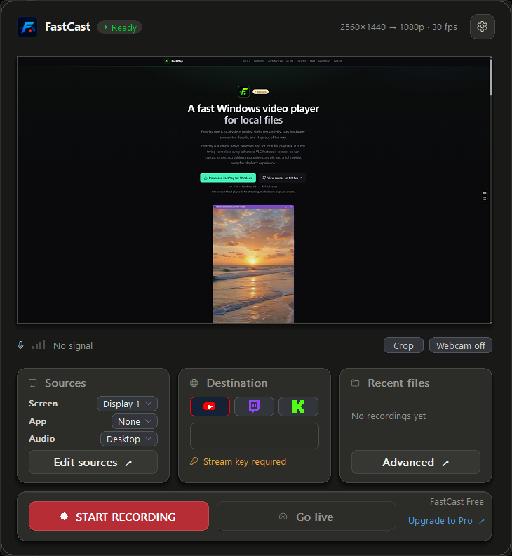

FastCast
A native Windows screen recorder and live streaming app.
FastCast helps creators record locally and stream to custom RTMP/RTMPS endpoints with desktop audio, microphone capture, and a webcam overlay — a simpler workflow than OBS for focused single-scene recordings. Choose a monitor or window, pick your audio, and record MP4 or go live without setting up scenes first.

Quick captures without scene setup
FastCast focuses on the common path: choose a screen or window, choose audio, add an optional webcam overlay, then record or stream. It is designed for lightweight Windows capture workflows during Open Beta.
Current release
v0.6.0
The latest public build is hosted on GitHub Releases. The app does not download or install updates automatically.
Open release pageFeatures in the Open Beta
Privacy and trust
No telemetry. No accounts. No crash upload. No background polling. No automatic updates.
Stream keys are not saved to disk.
The manual Check for Updates action only checks this public release feed. It does not download or install updates.
Support bundles are created only when you click Save Support Bundle. They are saved locally and redacted before being written.
Private source
FastCast source code is private and proprietary. This public repository hosts downloads and version metadata only.
Verify the download
Download FastCast-0.6.0-win-x64.zip from the latest release. An optional
.sha256 sidecar is included for integrity checks.
Expected SHA-256:
1c890d9de1f8da1ddfc70a654e8d9b08e7fd62b8fc11e8e38d82cb334f2f2c88
SmartScreen
FastCast is currently unsigned, so Windows SmartScreen may show an "Unknown Publisher" warning. If you trust the download source, click More info -> Run anyway. If that is a dealbreaker, do not run it yet.
Open Beta status
FastCast Free remains free during the Open Beta and covers simple 1080p30 recording and streaming. FastCast Pro is an optional paid license (activated in the app via Lemon Squeezy) that unlocks 1440p/4K recording and 60 fps capture where your hardware supports them, plus advanced encoder controls. There are still no accounts and no telemetry; license activation is user-initiated and local-first.
Known limitations
- No scene system / multiple sources yet
- No chroma key or filters yet
- No multistream / simulcast yet
- No platform OAuth yet
- Intel hardware encoding is not broadly validated yet; software fallback is included
- App is unsigned during Open Beta
Report issues
If something breaks, click Save Support Bundle in FastCast and send the generated ZIP with a short description of what happened.